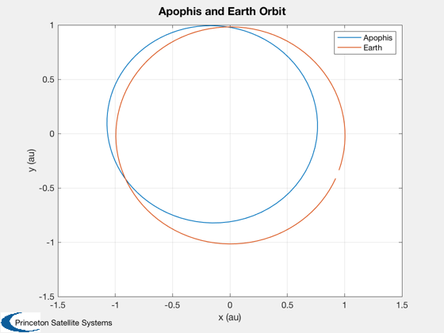

Compute a transfer from earth orbit to the asteroid Apophis.
Since version 8.
------------------------------------------------------------------------
See also Constant, LabelLine, Plot2D, LambertOpt, RVOrbGen, RV2El
------------------------------------------------------------------------
Contents
Constants
au = Constant('au');
mu = Constant('mu sun');
dayToSec = 86400;
Time span
days = linspace(0,360);
t = days*dayToSec;
dT = [300 10000]*dayToSec;
Apophis 9/3/2009
rA = [-1.060134642006718E+00; 2.449001979592227E-01; -3.851125553252051E-02]*au;
vA = [-2.431064866762155E-03; -1.470948647780653E-02; 7.209696094968381E-04]*au/dayToSec;
Earth 9/3/09
rE = [9.509007838786436E-01; -3.366237648105087E-01; 3.499785524900624E-06]*au;
vE = [5.457896569254231E-03; 1.614834039489075E-02; -9.428607986007231E-07]*au/dayToSec;
Find the transfer
[dV, tOptimal, elT] = LambertOpt( rE, vE, rA, vA, dT, mu )
dV =
-38.982
-43.875
-1.8935
tOptimal =
1.9407e+07 8.5098e+08
elT =
-457.6 5.5378e-05 2.864 3.0932 3.2974e+05 1.247e+06
Find orbital elements
elA = RV2El( rA, vA, mu );
elE = RV2El( rE, vE, mu );
Generate the orbits
rA = RVOrbGen( elA, t, [], mu )/au;
rE = RVOrbGen( elE, t, [], mu )/au;
rT = RVOrbGen( elT, t, [], mu )/au;
Plot the results
Plot2D( [rA(1,:);rE(1,:)],[rA(2,:);rE(2,:)],'x (au)', 'y (au)', 'Apophis and Earth Orbit');
legend({'Apophis' 'Earth'})
LabelLine( rT, days, 5, 't = %4.0f' )
